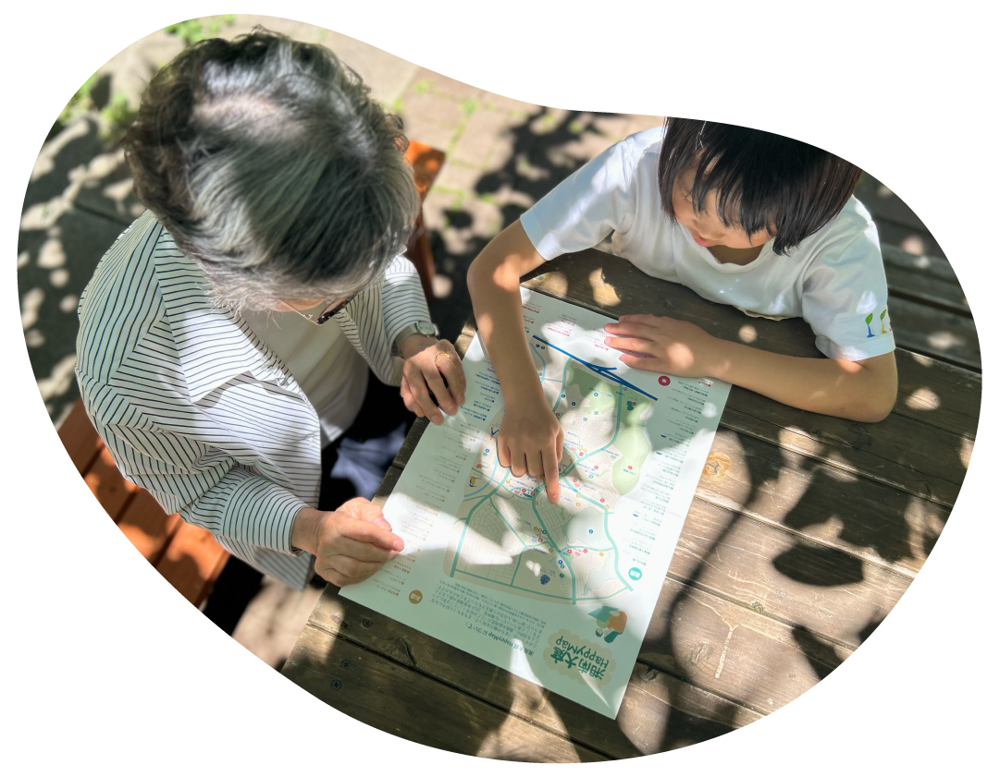
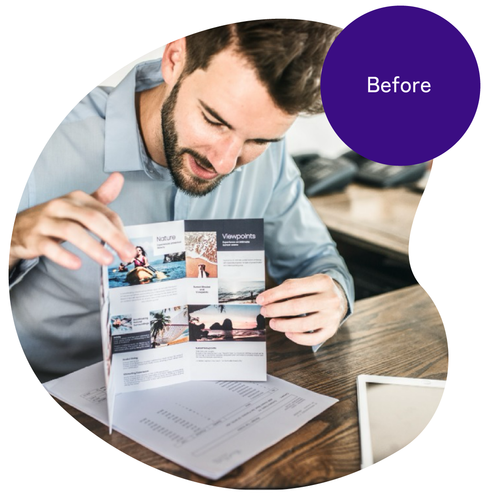
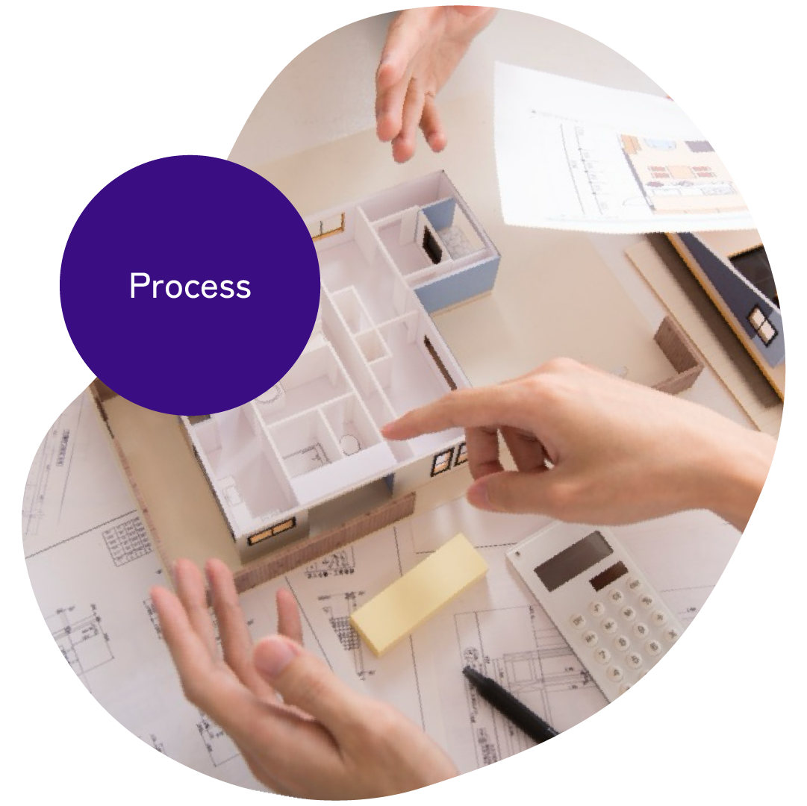
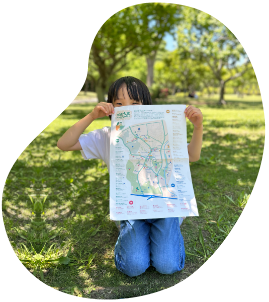

Case
実績
地域まちづくりマップ制作
地域の情報や魅力を整理し、
わかりやすく伝わるマップとして
可視化しました。

ご相談内容
“まちの魅力を知って、もっと好きになる”ことを目的に、 地域の方々から集まった「お気に入りの場所」を、1枚のマップとしてまとめたいというご相談でした。
課題
・地域情報の量が多く、1枚のマップにまとめることが課題でした
背景
湘南大庭地区は、30年前に整備された住宅地で、 現在は高齢化が進む一方、地域活動も盛んなエリアです。 年１回の”ふるさとまつり”では、世代を超えて地域の方々が参加されており、地域への愛着やあたたかさを感じました。

進め方
郷土づくり推進会議のMAP部会の皆さまの月1回の議事録をご共有
いただき、修正箇所などの確認を行い作業を進めました。
工夫した点
・タイトルを手書きにすることでマップに柔らかさを加えました
・掲載する情報をExcelにまとめていただき作業を進めました
・情報量が集中する地域は見やすい配置を意識しました
・若い世代にも親しみやすい色合いを心がけました

制作後
地域の方々から集まった53か所の「お気に入りの場所」が、1枚のマップになりました。 イベント配布用として100部印刷された後、 市民センターのご協力により1,000部増刷。 現在は、ご厚意で図書館にもご登録をいただき、どなたでも手に取ることができるようになりました。大学生の方からは、「市外から転居してきた人にもわかりやすい」という声をいただきました。 また、地域情報を調べに図書館を訪れた小学生の男の子にも、地元の地図があることを喜んでいただけたそうです。
ご利用いただいた方からメッセージ
ああああああああああああああああああああああああああああああああああああああああああああああああああああああああああああああああああああああああああああああああああああああああああああああああああああああああああああああああああああああああああああああああああああああああああああ
